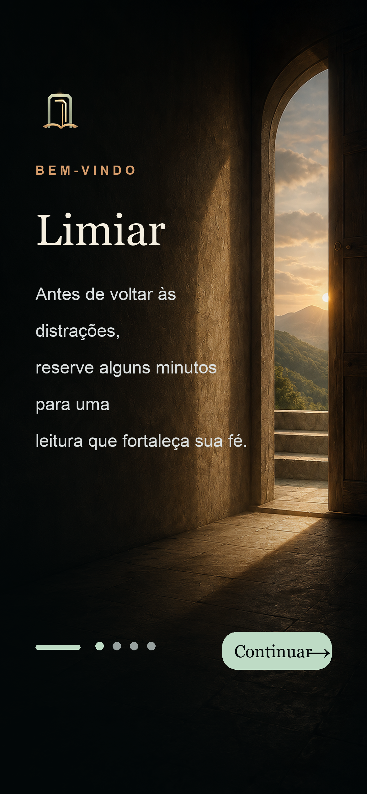

Preview atual
Limiar
Fundo mantido com a porta iluminada, agora com a paleta suave do botão, tipografia serifada e a frase: “Antes de voltar para as distrações, reserve alguns minutos para iluminar sua mente.”
Religião espírita incluída
Trechos bíblicos como foco
IA leve com cache local
Rotação de trechos
Sessão perto de 10 min
Trechos salvos
Narração masculina do iOS